수술센터
레이저 보조 백내장 수술 시스템 레이저 보조 백내장 수술 시스템 레이저 보조 백내장 수술 시스템
레이저를 활용한 백내장 수술은
100세 시대를 미리 준비하세요.
3D로 진단하고 레이저로 수술해
정확하고 안전합니다.
레이저 보조 백내장 수술이란?
카탈리스 장비를 이용하여
3D-OCT와
정밀한 레이저를 활용해
아주 작은 단위까지
세밀하게
측정해 수술의 정확도와
수술 성공률,
수술 뒤 시력
회복력까지
크게 높인
레이저 보조 백내장 수술입니다.
레이저 보조 백내장 수술 과정
cataract process
레이저 보조 백내장 수술 과정
-
1
각막 절개
레이저 각막 절개
-
2
원형낭 절개
레이저 수정체
전낭절개 -
3
수정체 파쇄
레이저를 이용해 수정체 파쇄
-
4
수정체 제거
조각낸 수정체 제거
-
5
인공 수정체 삽입
-
6
수술 후 상태 확인
교정 뒤 빛의 초점이 망막에 닿도록
상태 확인
세밀하고 정확하게 수술하는
카탈리스 레이저 백내장 수술
-
안전성을 높이는
레이저로 입체 모양을 내는 각막 절개입체 절개 방식으로 봉합 단계를 줄여
한층 더 안정적인 수술 경과일반 백내장 수술 (초음파 백내장 수술)
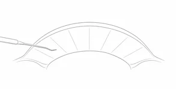
수기로 진행하는 평면 형태의 각막 절개
카탈리스 레이저 백내장 수술
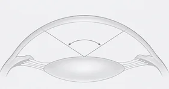
레이저 다면 각막 절개

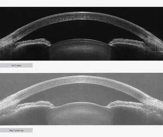
*카탈리스 레이저 백내장 수술 예시
-
빠르고 정교한 절개
1.5초 빠른 절개와 환자 맞춤
난시 교정으로 탁월한 수술 결과일반 백내장 수술 (초음파 백내장 수술)
수기방식 칼날 절개
- 육안과 손기술에 의존한 방식
- 수정체낭 찢어짐과
같은 합병증 발생 가능카탈리스 레이저 백내장 수술
레이저 수정체 원형 절개
+ 난시 교정 절개- 레이저를 활용한 정교한 수술 가능
- 1.5초 내에 절개가 가능해
합병증 위험성 감소 -
레이저 수정체 유화술
눈 조직 손상을 줄여 수술 뒤 빠른 회복
일반 백내장 수술 (초음파 백내장 수술)
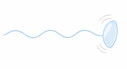
초음파로
혼탁부위 제거
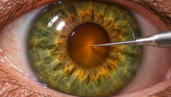
*일반적인 초음파 방식으로 진행하는 백내장 수술 예시입니다.
카탈리스 레이저 백내장 수술
레이저로 혼탁부위 제거
- 초음파 진동으로 생기는 각막내피세포 손상,
각막부종, 염증과 같은 합병증 감소- 각막내피세포 손상 36.1% 감소
*카탈리스 레이저 백내장 수술 예시
수술 성공률과 수술 후 시력
회복력까지 높인
카탈리스 레이저
백내장 수술
-
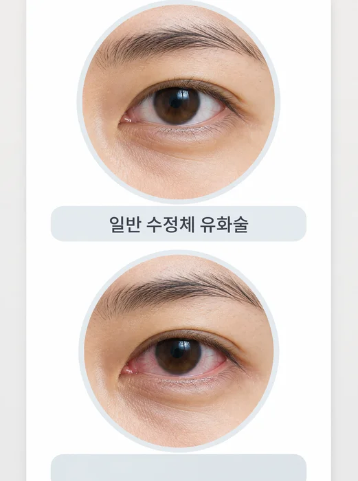
안정성Point1
정밀한 레이저를 통한
합병증 최소화정밀한 레이저로 혼탁해진 수정체를
수정체 조각을 더 수월하게 제거할 수 있도록 했습니다.
기존 백내장 수술에서 생길 수 있던 각막내피 손상,
각막 부종, 염증 같은 여러 합병증을
크게 줄일 수 있었습니다. -
맞춤성Point2
환자별로 최적화된
레이저 강도 조절연령대가 높아질수록 수정체는 더
딱딱하게 굳어갑니다.
즉, 환자의 눈 상태에
따라 레이저 강도도 달라져야 합니다.
레이저 백내장 수술은 수술 전 환자의 눈을
눈 상태를
정확하게 자동 측정하는 3D OCT 검사를 먼저 거쳐
환자 맞춤 백내장 수술을 할 수 있습니다.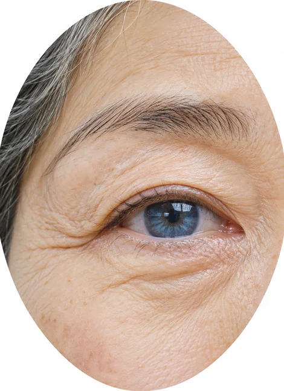
-
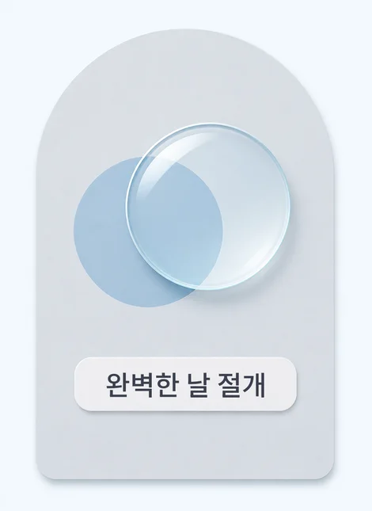
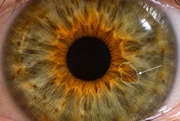
수기방식 수술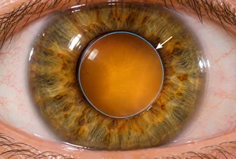
레이저 방식 수술정밀성Point3
단시간 완벽에 가까운 절개
레이저 조사 시간은 2분 안으로 유지하면서 더
완벽한 원형으로
정확한 낭 절개가 이뤄지도록 레이저를 조사합니다.
매끄러운 낭 절개는
부작용을 최소화시킵니다. -
내 눈에 맞는 인공수정체로 수술 뒤 만족도 UPPoint4
내 눈에 맞는 인공수정체로Point4
수술 후 만족도 UP
최적화된 인공수정체
백내장 수술은 인공수정체의 선택이
만족도와 직결됩니다.
자신의 눈에 최적화된
인공수정체를 사용할수록
수술 후 시력회복 및 초점 조절 등
고객의 만족도가 향상되기 때문입니다.인공수정체에 대해 더 궁금하신가요?인공수정체
더보기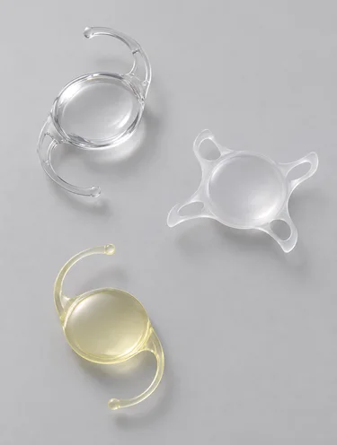
카탈리스 레이저 백내장
수술 추천 대상자Recommend
수술장비
카탈리스 레이저 장비
손으로 하는 백내장 · 다초점 수술의 단점을 보완,
백내장 수술용 FS레이저
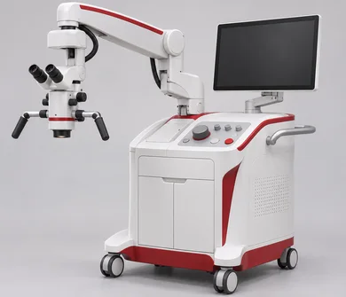
eyedesign
센츄리온
수술 중 안압을 자동으로 감지하여
수술 중 알맞은 안압을 계속 지켜 주는 기술로
수술 중 통증은 줄이고 안정성은 높입니다.
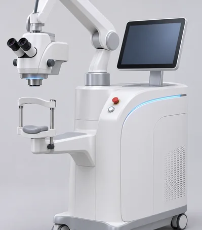
Centurion
정확한 검사로 수술의 완성도를 높입니다.
대학병원급 장비를 활용한
75가지 안 정밀검사
-
대학병원급
1
의료장비 및 검진 시스템 보유 -
연구하는 의료진,
2
국가공인 검안사를 통한
전문 검진 -
평균 21년 이상 안과전문의
3
크로스 체크
-
연령대별 세분화된
4
검진 프로그램 -
안질환 관련 외래 진료 및
5
치료 가능
*카탈리스 레이저 백내장 수술 예시
*일반적인 초음파 방식으로 진행하는 백내장 수술 예시입니다.
*카탈리스 레이저 백내장 수술 예시